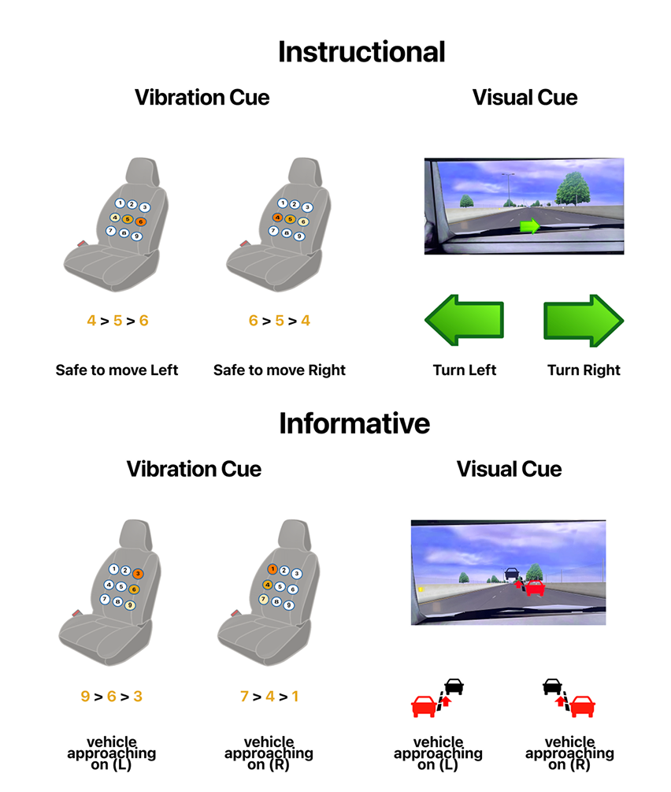

04 · SJSU Human Factors Lab · 2024–2025 · NSF-funded
Multimodal Takeover Signals for Hearing-Impaired Drivers in Automated Vehicles
Automated vehicle takeover systems rely heavily on auditory signals, yet no prior study had examined how these systems perform for hearing-impaired drivers. This M.S. thesis addressed that gap through a controlled factorial experiment across 42 participants, producing the first empirical data on multimodal takeover performance for this population. Published at AutomotiveUI 2024 at Stanford.
My Role
Lead researcher and first author. Designed the study, built all stimulus conditions, recruited and ran all 42 participants, conducted statistical analysis, and wrote the thesis and conference paper.
Published at AutomotiveUI '24, Stanford (ACM DOI: 10.1145/3641308.3680515). First empirical data on multimodal takeover performance for hearing-impaired AV drivers. VT multimodal signals significantly outperformed single-modal. No performance gap between hearing and non-hearing groups.
42
Participants (21 hearing · 21 simulated HI)
1st
Study of its kind for hearing-impaired AV drivers
Published
AutomotiveUI '24 · Stanford · ACM
Research Gap
Hearing impairment affects approximately 466 million people worldwide and roughly 15% of US adults report some difficulty hearing. While research on multimodal takeover displays has grown substantially, it has focused almost exclusively on drivers with typical hearing. The auditory channel, which carries a significant portion of takeover alert information, is unavailable or unreliable for this population.
SAE Level 3 automation handles most driving tasks but still requires human takeover when the system encounters something it cannot handle, such as a construction zone, an unexpected obstacle, or a system fault. The window to respond is 5 to 8 seconds. Standard takeover request systems use auditory alarms, voice prompts, or combinations that assume the driver can hear. For hearing-impaired drivers, that assumption fails silently, and no prior study had measured the consequence.
The real-world problem: A Mercedes SAE Level 3 vehicle prompting a driver to take over. The standard system assumes the driver can hear the accompanying alert. For 466 million people worldwide, that assumption fails.
The population this research addresses
466M
people worldwide with disabling hearing loss (WHO, 2024)
15%
of US adults report difficulty hearing (NIDCD)
0
prior studies on hearing-impaired drivers in SAE Level 3 AV takeover scenarios
Research Design
The study used a 3 (information type) × 3 (signal type) × 2 (hearing ability) full factorial design, giving 18 conditions per participant. This structure tests both main effects and all interactions simultaneously, the right approach when the goal is to know not just whether multimodal is better, but whether it is differentially better for hearing-impaired drivers specifically.
Three signal modalities
Visual (V): on-screen display only: arrow, approaching vehicle icon, or red warning circle
Tactile (T): seat-back vibration only: 9 C-2 tractors in a 3×3 array, 250 Hz, directional patterns
Multimodal (VT): visual and tactile simultaneously, with no auditory component
Why no audio condition: The research question was specifically about what replaces audio for drivers who cannot use it. A VAT condition was deliberately excluded to focus on the design space that remains viable for the hearing-impaired population.
Three information types
Instructional: green arrow (left or right) telling the driver exactly which lane to use; high specificity, requires interpretation of new symbology
Informative: red car approaching from behind; situational awareness, driver decides what to do
Baseline: abstract red circle warning; minimal information, driver must read mirrors and environment
The 3×3 condition matrix: 18 conditions, each participant experienced all of them
Visual only
On-screen display · no tactile signal
Tactile only
Seat vibration · no visual overlay
Multimodal VT ★
Visual + tactile simultaneously · best performer
Instructional × each modality
Informative × each modality
Baseline × each modality

The stimulus conditions: Instructional signals (top) paired a directional green arrow on screen with seat vibration indicating which side was safe to move to. Informative signals (bottom) showed a red car approaching from behind alongside seat vibration indicating the approaching vehicle's side. A baseline condition (not shown) used an abstract red circle and center-seat vibration, prompting drivers to rely on mirrors.
Methods & Operations
Apparatus
miniSim medium-fidelity driving simulator (University of Iowa DSRI) with three 48-inch LED screens, steering wheel, pedals, and a custom tactile seat with a 9-element vibrotactile array. Participants drove a simulated 3-lane highway at 60–65 mph with autonomous mode active.
Hearing impairment simulation
Noise-canceling headphones and foam earplugs worn simultaneously, blocking ambient and simulator audio. Healthy participants served as the control group. Actual hearing-impaired individuals were not recruited, a noted limitation as it caps ecological validity.
Recruitment & ethics
42 participants (26F, 16M, ages 18–44) recruited via SJSU SONA research pool. Required valid driver's license, normal/corrected vision, no neurological issues affecting touch. Written informed consent obtained before all sessions. Compensated with 2 hours course credit. IRB-approved protocol.
Dependent measures
Reaction time (signal onset to first brake/steer input) · Takeover time (signal onset to 2° steering change) · Maximum resulting acceleration/jerk (takeover quality) · Post-drive questionnaire (preference, subjective experience)
Analysis
Three-way repeated-measures ANOVA (signal type and information type as within-subjects; hearing ability as between-subjects). Greenhouse-Geisser corrections applied for sphericity violations. Bonferroni post-hoc comparisons for significant effects. Effect sizes reported as partial η².
Secondary task
Participants simultaneously played a matching game during the drive to simulate the cognitive load of being off-task, a common condition during Level 3 automation. Takeover occurred without warning mid-drive, creating realistic urgency.
The Experiment in the Lab
miniSim driving simulator, SJSU Human Factors Lab: A participant drives the simulated highway at 60 mph in autonomous mode. The tactile seat array is integrated into the seat back. When a takeover event fires, the automation disengages and the appropriate visual and/or tactile signals activate simultaneously. The participant must respond within the 5 to 8 second critical window: brake to deactivate automation, then lane change to avoid the construction zone.
Key Findings
Three-way repeated-measures ANOVA with Greenhouse-Geisser corrections. All significant effects at p < .001 unless noted. Effect sizes reported as partial η².
1
Multimodal VT signals produced significantly faster takeover and reaction times than either modality alone
Signal type had a significant main effect on both reaction time (F(1.579, 59.996) = 24.697, p < .001, ηp² = .394) and takeover time (F(1.738, 66.038) = 18.874, p < .001, ηp² = .332). VT reaction time (M = 1.38s) was significantly faster than visual-only (M = 1.61s) or tactile-only (M = 1.65s). VT takeover time (M = 2.13s) versus V (M = 2.50s) and T (M = 2.55s). Distributing the alert across two sensory channels, consistent with Wickens' Multiple Resource Theory, reduced cognitive processing time at the most critical moment.
2
No significant performance gap between hearing and simulated hearing-impaired drivers
Hearing ability had no significant main effect on reaction time (F(1, 38) = 2.433, p = .127, ηp² = .060) or takeover time (F(1, 38) = 0.526, p = .473, ηp² = .014). Drivers with simulated hearing loss performed equivalently to the control group across all 18 conditions. When audio is removed entirely and only visual-tactile signals remain, performance does not degrade. The well-designed non-auditory interface compensated fully.
3
Abstract baseline warnings produced faster reactions than specific instructional signals
Information type had a significant effect on reaction time (F(1.978, 75.163) = 7.768, p < .001, ηp² = .170). The baseline abstract warning (M = 1.45s) was fastest, followed by informative (M = 1.58s) then instructional (M = 1.61s). Instructional signals, despite being the most specific, imposed the highest cognitive load because drivers had to learn and decode new symbology. The familiar warning pattern matched what drivers already knew from everyday driving, reducing processing time at the moment it mattered most. Familiarity operates as a design variable.
4
Subjective preferences aligned with objective performance but diverged on information type
60% of participants preferred multimodal VT as most helpful, consistent with the performance data. However, 51% preferred informative signals subjectively despite baseline warnings being objectively faster to respond to. Drivers wanted to understand their situation even if that understanding cost reaction time, a design tension between safety-optimal (simplified abstracts) and user-preferred (situational context) that has direct implications for HMI specification.
Results at a Glance
Information type
Baseline
Instructional
Informative
Takeover Time (seconds)
F(1.738, 66.038) = 18.874, p < .001, ηp² = .332 — VT significantly faster than V and T
Visual only
2.50
2.39
2.57
Tactile only
2.34
2.93
2.36
Multimodal VT ★
2.03
2.11
2.20
V · M = 2.50s avg
T · M = 2.54s avg
VT · M = 2.11s avg ↓ fastest
Reaction Time (seconds)
F(1.579, 59.996) = 24.697, p < .001, ηp² = .394 — VT significantly faster; Baseline fastest by information type
Visual only
1.60
1.64
1.59
Tactile only
1.49
1.76
1.64
Multimodal VT ★
1.27
1.38
1.45
V · M = 1.61s avg
T · M = 1.63s avg
VT · M = 1.37s avg ↓ fastest
Means in seconds. All values from three-way repeated-measures ANOVA (Greenhouse-Geisser corrected). Hearing vs. non-hearing groups not shown — no significant difference observed across either measure.
The Unexpected Finding and What It Means
The study's hypothesis predicted that hearing-impaired drivers would show slower takeover performance than controls. They did not. This was the most important result and required careful interpretation rather than dismissal.
What we expected
Removing auditory signals would degrade performance for hearing-impaired drivers relative to controls, who retain access to background environmental sounds (engine noise, other vehicles, sirens) that implicitly support situation awareness.
→
What we found and why
No significant difference. Three possible mechanisms: (1) the auditory channel is easily masked in real driving by music, phone calls, and road noise; its loss may matter less than assumed; (2) takeover scenarios are dominated by sudden, salient visual-tactile events where audio adds limited value over a well-designed VT system; (3) simulation may have reduced reliance on ambient environmental audio cues present in real driving. All three warrant follow-up with actual hearing-impaired participants.
This null finding carries positive design implications: it provides early empirical evidence that a well-engineered visual-tactile takeover system can serve hearing-impaired drivers without a performance penalty. That is a meaningful signal for automotive HMI designers, even as it requires replication with clinical hearing-impaired participants to be generalized.
Study Video
Study overview video — demonstrates the miniSim setup, stimulus conditions, and takeover scenarios. Opens on YouTube.
Design Implications
Published at AutomotiveUI '24, Stanford · ACM DOI: 10.1145/3641308.3680515 · first empirical data on multimodal takeover performance for hearing-impaired AV driversVT multimodal signals significantly outperformed single-modal · no performance gap between hearing and non-hearing groupsFindings submitted to inform future AV HMI accessibility guidelines
Reflection
Simulated hearing impairment is not the same as living with it
The study's most significant limitation is one built in by necessity: hearing impairment was simulated with headphones and earplugs, not recruited clinically. Actual hearing-impaired drivers bring years of adapted behavior: heightened visual attention, different mirror-checking habits, compensatory strategies the simulation cannot replicate. The null finding on hearing ability is encouraging, but it cannot be read as definitive until the study is replicated with actual clinical participants. This limitation was named explicitly in the paper and thesis because it matters for how the findings should be used.
Testing the hypothesis rather than confirming it produced the more valuable result
The study was designed to falsify the assumption that hearing-impaired drivers would perform worse, not to confirm it. The null finding on hearing ability, though it contradicted the original hypothesis, was the right result to report and defend. A disconfirmation backed by a 3×3×2 factorial design and three dependent measures is more useful to automotive HMI designers than a confirmation would have been: it moves the design conversation from "how do we compensate for hearing loss?" to "a well-designed visual-tactile system may not require compensation at all."